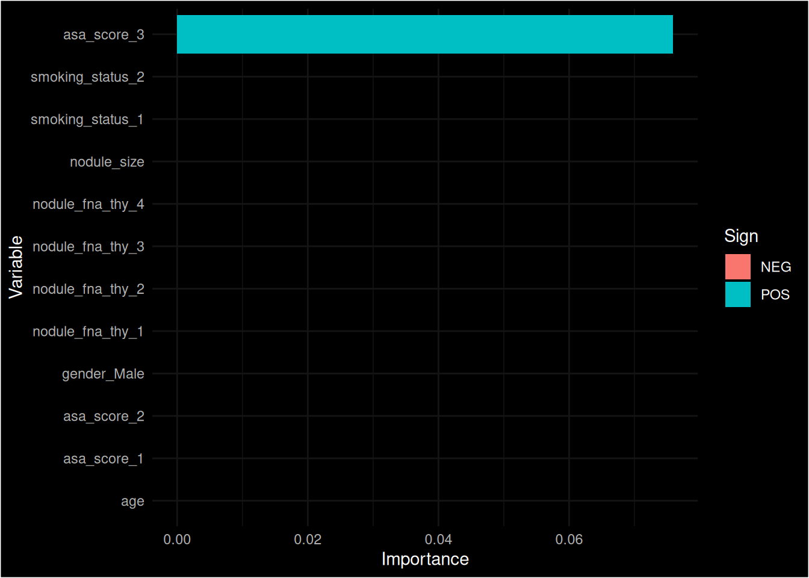
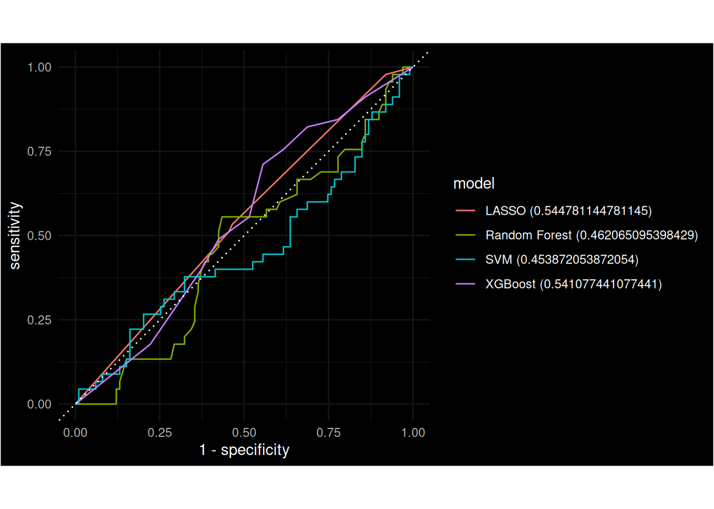

set.seed(5039378)
split <- rsample::initial_split(dummy, prop = 0.75)
train <- rsample::training(split)
test <- rsample::testing(split)Modelling
TidyModelling
The R packages included in the Tidymodels provide an excellent framework for undertaking the modelling aspect of the work.
A very useful training workshop was held 2023-10-18 as part of the R in Pharma event. Nicola Rennie has made her material is available on-line and it provides a good starting point for applying the various modelling methodologies to prediction of Thyroid cancer.
Whilst this provides an excellent introduction to the Tidy Modelling framework the book Tidy Modeling with R goes deeper into the methods and options available. Another useful reference on which this books builds is R for Data Science (2e) which should serve as a useful reference for learning R and adopting good practices.
It is also recommended to read the documentation that goes with the Tidymodels package, in particular the Get Started page which includes a predictive modelling case study.
Setting up Tidymodels
In the absence of the data set that is to be analysed we simulate some dummy data on which to demonstrate the methods.
Training and Testing
To get going with Tidymodels we first need to split our data into Testing and Training subsets. This is done so that we do not have an over-fitted model as we fit the model to the training subset and then test its predictive accuracy in the subset that we withheld, the test subset.
The allocation of individuals to train or test is performed randomly and so we set a seed to ensure the pseudo-random number generator produces the same split each and every time this script is run (this makes our work reproducible). A decision has to be made about how to split the data, often a slightly larger proportion is used for the training subset, here we chose to use a 3:1 split (i.e. 75% of observations are used in the training set).
Cross Validation
We will still want to make some assessment of the model estimated from the training set and this is achieved by resampling which involves taking subsets of our training data and fitting the models on those subsets and then looking at the distribution of metrics across the multiple model fits. A commonly used approach for this methodology is Cross-Validation. V-fold cross-validation splits the data into V folds, the first fold is excluded from the data set and the model assessed, then this subset is replaced and the second fold is excluded and the model assessed again. This is repeated until each fold has been excluded and the model estimated on the remainder. This method can then be repeated R times where the folds are varied in each repetition to give a better estimate of the model parameters.
The following figure gives an overview of how V-fold cross-validation works (without repetition).

We can set this up by passing the train subset into the rsample::vflod_cv() function and define the number of folds (v) and the number of repeats (repeats).
cv_folds <- rsample::vfold_cv(train, v = 10, repeats = 10)Another method of cross-validation is Leave One Out where one observation is removed from the (training) data set, the model is fitted on the remaining samples and then used to make a prediction on the excluded sample. This is then repeated on all samples. We can set this up using the rsample::loo_cv() function.
cv_loo <- rsample::loo_cv(train)Recipe
In the Tidymodels framework the starting point is to create a Recipe, this sets up the “ingredients” for the model and defines what steps should be taken prior to fitting the model, regardless of what model is being fitted. Steps that can go into making a recipe are…
- Define the model in terms of outcome variable and predictors.
- Creating dummy variables for categorical variables.
- Normalizing data, e.g. log-transformation, rescaling.
Note that we pass only the train data into the recipe so that models are fitted on the training data.
thyroid_recipe <- recipes::recipe(final_pathology ~ gender + nodule_size + age + asa_score + smoking_status + nodule_fna_thy, data = train) |>
# recipes::step_num2factor(final_pathology, levels = c("Benign", "Malignant")) |>
recipes::step_dummy(gender, asa_score, smoking_status, nodule_fna_thy) |>
recipes::step_normalize(all_numeric())Workflow
Once a recipe has been defined it can be added to a workflow which will apply this step every time the workflow is run using the different models and post-processing steps that we will add.
thyroid_workflow <- workflows::workflow() |>
workflows::add_recipe(thyroid_recipe)Methods to Consider
There are a wealth of options when it comes to “Machine Learning”, these days even logistic regression is grouped into the term! There are however a large number of more sophisticated methods for analysing the data, and it is often wise to apply a number of methods to ensure they are converging on similar solutions rather than cherry-picking any one method.
Logistic Regression
Logistic regression, even in its most basic form is, still considered a “machine learning” algorithm. However because we do not know which out of an array of variable will be useful predictors and, following Occam’s Razor we would tend to prefer simpler explanatory models over complex ones we need a method of determining what subset of variables gives good prediction. An old approach to this was to use Stepwise regression, perhaps based on univariable analyses to select which to use as a base but these approaches have fallen out favour for various reasons as they are ultimate biased (for an overview see (Steyerberg et al. 2001)).
A popular alternative is the Least Absolute Shrinkage and Selection Operator (LASSO) proposed by (Tibshirani 1996) which performs L1 regularisation and allows the coefficients for variables in a series of fitted models to “shrink” towards zero but not drop out completely. It is similar to Ridge Regression which avoids over-fitting by reducing the sum of squares of the regression coefficients but unlike Ridge Regression it allows variables to be selected as the coefficients can (almost) drop out by virtue of their coefficients shrinking towards zero.
Another popular alternative is Ridge Regression which uses L2 regularisation and is useful when there are predictor variables that are co-linear (i.e. correlated).
It is possible to combine L1 and L2 regularisation in what is known as Elastic Net which combines both L1 and L2 regularisation in a linear manner.
Specify the Model
Whilst we have defined the relationship between variables in the Worfklow above we now need to say what model we wish to use to test the relationship between variables.
We first set up a simple logistic regression model using parsnip. The mixture argument is a value 0 <= mixture <= 1 which determines how much L1 regularisation is used in the model. A value of mixture = 1 is equivalent to full L1 regularisation and a LASSO model whilst a value of mixture = 0 is equivalent to full L2 regularisation and ridge regression. Here we use a mixture = 1 which is a full LASSO model and we may wish to inspect the results of this model and only use those variables which are of some importance in subsequent modelling steps.
tune_spec_lasso <- parsnip::logistic_reg(penalty = hardhat::tune(), mixture = 1) |>
parsnip::set_engine("glmnet")Tuning
The next step is to tune the model using the tune::tune_grid() function which will calculate accuracy or Root Mean Square Error (or other metrics) for a recipe with multiple samples. We defined our resamples above in two forms (not that we defined cross-validation as a way of sampling from our training data above).
Re-sampling is performed at this stage by specifying the cv_folds to the resamples option. This gives more robust estimates of the model parameters.
lasso_grid <- tune::tune_grid(
object = workflows::add_model(thyroid_workflow, tune_spec_lasso),
resamples = cv_folds,
grid = dials::grid_regular(penalty(), levels = 50)
)Fit Final Model
Now select the model with the highest Receiver Operating Characteristic Area Under the Curve (ROC AUC) from the tuned grid search results.
…and finalize the workflow by adding this value.
Model Evaluation
Collect metrics using the original data.
tune::last_fit(object = final_lasso_kfold, split = split) |>
tune::collect_metrics()# A tibble: 2 × 4
.metric .estimator .estimate .config
<chr> <chr> <dbl> <chr>
1 accuracy binary 0.688 Preprocessor1_Model1
2 roc_auc binary 0.455 Preprocessor1_Model1And plot the importance of variables, note these are not the same as regression coefficients, the importance values are relative to each other, although the sign indicates whether that particular variable/level increases or decreases risk.
final_lasso_kfold |>
fit(train) |>
hardhat::extract_fit_parsnip() |>
vip::vi(lambda = lasso_kfold_roc_auc$penalty) |>
dplyr::mutate(
Importance = abs(Importance),
Variable = fct_reorder(Variable, Importance)
) |>
ggplot(mapping = aes(x = Importance, y = Variable, fill = Sign)) +
geom_col() +
dark_theme_minimal()Inverted geom defaults of fill and color/colour.
To change them back, use invert_geom_defaults().
Random Forest
Random forests build on the concept of regression trees by building many such trees on random subsets of data and averaging them. They build “deep” trees partitioning the data each time testing to see which variable provides the optimal split (best prediction into the Malignant/Benign categorisation). Adding splits at each recursive branch until all individuals are classified. Part of the art is deciding how “deep” to go as too many partitions results in over-fitting and lack of generalisability.
Random Forests itteratively search through the variables to work out which provides the best method of classifying people into either Malignant or Benign“. It tries all variables in# turn. For binary variables such as gender this is straight-forward. For continuous variables a number of different thresholds for dichotomising the variable are tested for each possible split and the optimal cut-point is selected. This process is repeated so that after for example after selecting gender to be a strong predictor the remaining variables will tested for their predictive ability and the best selected. The number of trees that are created and tested is defined by the trees parameter which here is set to 100. For binary variables such as gender this is straigh-forward but for continuous variables different thresholds for splitting are tested and the optimal point is selected.
This whole process is repeated a number of times building lots of trees (i.e. random forests) and it is in this regard an “ensemble” method as it is averaging across many possible methods.
rf_tune <- parsnip::rand_forest(
mtry = tune(),
trees = 100,
min_n = tune()
) |>
set_mode("classification") |>
set_engine("ranger", importance = "impurity")As before the process is repeated using Cross validation on the training set.
rf_grid <- tune::tune_grid(
add_model(thyroid_workflow, rf_tune),
resamples = cv_folds, ## cv_loo,
grid = grid_regular(mtry(range = c(5, 10)), # smaller ranges will run quicker
min_n(range = c(2, 25)),
levels = 3
)
)…and the best model based on the ROC AUC selected…
rf_highest_roc_auc <- rf_grid |>
select_best("roc_auc")
final_rf <- tune::finalize_workflow(
add_model(thyroid_workflow, rf_tune),
rf_highest_roc_auc
)…and the metrics calculated.
tune::last_fit(final_rf, split) |>
tune::collect_metrics()# A tibble: 2 × 4
.metric .estimator .estimate .config
<chr> <chr> <dbl> <chr>
1 accuracy binary 0.639 Preprocessor1_Model1
2 roc_auc binary 0.528 Preprocessor1_Model1final_rf |>
fit(train) |>
hardhat::extract_fit_parsnip() |>
vip::vi(lambda = final_rf$penalty) |>
dplyr::mutate(
Importance = abs(Importance),
Variable = fct_reorder(Variable, Importance)
) |>
ggplot(mapping = aes(x = Importance, y = Variable, fill = Sign)) +
geom_col() +
dark_theme_minimal()Gradient Boosting
Gradient Boosting is another “ensemble” method but in contrast to Random Forests where deep partitioning trees are formed, gradient boosting uses “shallow” trees with simpler decision rules and layers are built in a stage-wise fashion. It allows a choice of loss functions for optimisation and typically out-performs Random Forests when it comes to prediction modelling.
A useful article showing how to use the XGBoost package with Tidymodels (via parsnip::boost_tree()) is here and informed the development of this section.
xgboost_model <- parsnip::boost_tree(
mode = "classification",
trees = 100,
min_n = tune(),
tree_depth = tune(),
learn_rate = tune(),
loss_reduction = tune()
) |>
set_engine("xgboost", objective = "binary:logistic")We use the dials package to set tuning parameters for the model along with the grid space we are to use (there are lots of options here) this helps identify the hyperparameters with the lowest prediction error.
xgboost_params <- dials::parameters(
min_n(),
tree_depth(),
learn_rate(),
loss_reduction()
)
xgboost_grid <- dials::grid_max_entropy(
xgboost_params,
size = 10
)Finally the model is tuned
xgboost_tuned <- tune::tune_grid(workflows::add_model(thyroid_workflow, spec = xgboost_model),
resamples = cv_folds,
grid = xgboost_grid,
metrics = yardstick::metric_set(roc_auc, accuracy, ppv),
control = tune::control_grid(verbose = FALSE)
)We get the best final fit from the Gradient Boosting model.
xgboost_highest_roc_auc <- xgboost_tuned |>
tune::select_best("roc_auc")
final_xgboost <- tune::finalize_workflow(
add_model(thyroid_workflow, xgboost_model),
xgboost_highest_roc_auc
)Support Vector Machine
Yet another modelling approach is Support Vector Machines (SVMs) and again we step through the process of specify the model using the svm_rbf() function which aims to “maximize the width of the margin between classes using a nonlinear class boundary”
svm_tune_spec <- parsnip::svm_rbf(cost = tune()) |>
set_engine("kernlab") |>
set_mode("classification")The hyperparameters are then tuned, in effect running the model in multiple subsets of the cross-validation to get a “best fit”.
svm_grid <- tune::tune_grid(
workflows::add_model(thyroid_workflow, svm_tune_spec),
resamples = cv_folds, ## cv_loo,
grid = dials::grid_regular(cost(), levels = 20)
)The best fit is selected and fit to the overall training data set.
svm_highest_roc_auc <- svm_grid |>
tune::select_best("roc_auc")
final_svm <- tune::finalize_workflow(
add_model(thyroid_workflow, svm_tune_spec),
svm_highest_roc_auc
)Model Assessment
When considering the utility of prediction there are a number of metrics that can be used to determine how useful a model is. These focus on a number of terms which have very specific statistical meaning such as Sensitivity and Specificity.
| Test Positive | Test Negative | |
|---|---|---|
| Actual Positive | True Positive (TP) | False Negative (FN) |
| Actual Negative | False Positive (FP) | True Negative (TN) |
There are a wealth of metrics based on combinations of these True/False Positive/Negative including precision, recall and so forth (refer to the above linked article for further details). The Tidymodels package for summarising model performance is yardstick and we will use that to summarise the different metrics of model performance and how predictive these are.
Confusion matrices such as the above can be easily generated and even plotted using yardstick::confg_mat() function.
Predictions
We could compare the predicted status with the true status in the training sample which was used to fit the data to the model, but what we are really interested in is its performance outside of this sample, i.e. in the test proportion that were held out of the model fitting process. Fortunately Tidymodels has packages that make this easy as the tune::last_fit() does this automatcally when given the final fitted model and the object that splits the data into two (in this case the split object we created right after simluating the data).
We have in fact already made predictions throughout the modelling process already when we produced the various confusion matrices but we shall repeat them for each of the fitted models so its easier to make direct comparisons.
## LASSO
lasso_confmat <- tune::last_fit(object = final_lasso_kfold, split = split) |>
tune::collect_predictions() |>
yardstick::conf_mat(final_pathology, .pred_class)
knitr::kable(lasso_confmat$table, caption = "LASSO")
## Random Forest
rf_confmat <- tune::last_fit(final_rf, split) |>
tune::collect_predictions() |>
yardstick::conf_mat(final_pathology, .pred_class)
knitr::kable(rf_confmat$table, caption = "Random Forest")
## XGBoost
xgboost_confmat <- tune::last_fit(final_xgboost, split) |>
tune::collect_predictions() |>
yardstick::conf_mat(final_pathology, .pred_class)
knitr::kable(xgboost_confmat$table, caption = "XGBoost")
## SVM
svm_confmat <- tune::last_fit(final_svm, split) |>
tune::collect_predictions() |>
yardstick::conf_mat(final_pathology, .pred_class)
knitr::kable(svm_confmat$table, caption = "SVM")| Benign | Malignant | |
|---|---|---|
| Benign | 0 | 0 |
| Malignant | 45 | 99 |
| Benign | Malignant | |
|---|---|---|
| Benign | 11 | 19 |
| Malignant | 34 | 80 |
| Benign | Malignant | |
|---|---|---|
| Benign | 0 | 0 |
| Malignant | 45 | 99 |
| Benign | Malignant | |
|---|---|---|
| Benign | 8 | 16 |
| Malignant | 37 | 83 |
Confusion matrices for fitted models
Confusion matrices such as these can be used to calculate an array of statistics such as sensitivity, specificity, positive and negative predicitve value, false discovery rate and soforth. The Yardstick package has a convenience method for the result of yardstick::conf_mat() (a yardstick confusion matrix object). In the section below these are combined across models into a single table that we print out.
lasso_confmat_summary <- summary(lasso_confmat)Warning: While computing binary `precision()`, no predicted events were detected (i.e.
`true_positive + false_positive = 0`).
Precision is undefined in this case, and `NA` will be returned.
Note that 45 true event(s) actually occurred for the problematic event level,
Benign
While computing binary `precision()`, no predicted events were detected (i.e.
`true_positive + false_positive = 0`).
Precision is undefined in this case, and `NA` will be returned.
Note that 45 true event(s) actually occurred for the problematic event level,
Benignlasso_confmat_summary$model <- "LASSO"
rf_confmat_summary <- summary(rf_confmat)
rf_confmat_summary$model <- "Random Forest"
xgboost_confmat_summary <- summary(xgboost_confmat)Warning: While computing binary `precision()`, no predicted events were detected (i.e.
`true_positive + false_positive = 0`).
Precision is undefined in this case, and `NA` will be returned.
Note that 45 true event(s) actually occurred for the problematic event level,
Benign
While computing binary `precision()`, no predicted events were detected (i.e.
`true_positive + false_positive = 0`).
Precision is undefined in this case, and `NA` will be returned.
Note that 45 true event(s) actually occurred for the problematic event level,
Benignxgboost_confmat_summary$model <- "XGBoost"
svm_confmat_summary <- summary(svm_confmat)
svm_confmat_summary$model <- "SVM"
## Bind these to each others by row to produce a data frame in "long format" which we tidy (remove the '.estimator')
## column and reshape.
model_summary <- rbind(
svm_confmat_summary,
rf_confmat_summary,
xgboost_confmat_summary,
lasso_confmat_summary
)
drop <- c(".estimator")
model_summary <- model_summary[, !(names(model_summary) %in% drop)]
colnames(model_summary) <- c("Metric", "estimate", "model")
model_summary <- model_summary |>
dplyr::mutate(Metric = case_when(
Metric == "accuracy" ~ "Accuracy",
Metric == "kap" ~ "Kappa",
Metric == "sens" ~ "Sensitivity",
Metric == "spec" ~ "Specificity",
Metric == "ppv" ~ "Positive Predictive Value",
Metric == "npv" ~ "Negative Predictive Value",
Metric == "mcc" ~ "Matthews Correlation Coefficient",
Metric == "j_index" ~ "Youden's J-Statistic",
Metric == "bal_accuracy" ~ "Balanced Accuracy",
Metric == "detection_prevalence" ~ "Detection Prevelance",
Metric == "precision" ~ "Precision",
Metric == "recall" ~ "Recall",
Metric == "f_meas" ~ "F-Measure"
))
tidyr::pivot_wider(model_summary, names_from = "model", values_from = "estimate") |>
knitr::kable()| Metric | SVM | Random Forest | XGBoost | LASSO |
|---|---|---|---|---|
| Accuracy | 0.6319444 | 0.6319444 | 0.6875 | 0.6875 |
| Kappa | 0.0185185 | 0.0577778 | 0.0000 | 0.0000 |
| Sensitivity | 0.1777778 | 0.2444444 | 0.0000 | 0.0000 |
| Specificity | 0.8383838 | 0.8080808 | 1.0000 | 1.0000 |
| Positive Predictive Value | 0.3333333 | 0.3666667 | NaN | NaN |
| Negative Predictive Value | 0.6916667 | 0.7017544 | 0.6875 | 0.6875 |
| Matthews Correlation Coefficient | 0.0201008 | 0.0599486 | NA | NA |
| Youden’s J-Statistic | 0.0161616 | 0.0525253 | 0.0000 | 0.0000 |
| Balanced Accuracy | 0.5080808 | 0.5262626 | 0.5000 | 0.5000 |
| Detection Prevelance | 0.1666667 | 0.2083333 | 0.0000 | 0.0000 |
| Precision | 0.3333333 | 0.3666667 | NA | NA |
| Recall | 0.1777778 | 0.2444444 | 0.0000 | 0.0000 |
| F-Measure | 0.2318841 | 0.2933333 | NA | NA |
Receiver Operating Characteristics
We can use the yardstick package to facilitate visualising the [ReceThe Receiver Operating Characteristic (ROC) is a useful graphical tool for potting the false positive rate v’s the true positive rate (sensitivity). The roc_curve() function in yardstick makes plotting the ROC curvers relatively straight-forward.
## ROC : LASSO
roc_auc_lasso <- tune::last_fit(final_lasso_kfold, split) |>
tune::collect_predictions() |>
yardstick::roc_auc(final_pathology, .pred_Malignant)
roc_lasso <- tune::last_fit(final_lasso_kfold, split) |>
tune::collect_predictions() |>
yardstick::roc_curve(truth = final_pathology, .pred_Malignant)
roc_lasso$model <- paste0("LASSO (", roc_auc_lasso$.estimate, ")")
## ROC : Random Forest
roc_auc_rf <- tune::last_fit(final_rf, split) |>
tune::collect_predictions() |>
yardstick::roc_auc(final_pathology, .pred_Malignant)
roc_rf <- tune::last_fit(final_rf, split) |>
tune::collect_predictions() |>
yardstick::roc_curve(truth = final_pathology, .pred_Malignant)
roc_rf$model <- paste0("Random Forest (", roc_auc_rf$.estimate, ")")
## ROC : Random XGBoost
roc_auc_xgboost <- tune::last_fit(final_xgboost, split) |>
tune::collect_predictions() |>
yardstick::roc_auc(final_pathology, .pred_Malignant)
roc_xgboost <- tune::last_fit(final_xgboost, split) |>
tune::collect_predictions() |>
yardstick::roc_curve(truth = final_pathology, .pred_Malignant)
roc_xgboost$model <- paste0("XGBoost (", roc_auc_xgboost$.estimate, ")")
## ROC : SVM
roc_auc_svm <- tune::last_fit(final_svm, split) |>
tune::collect_predictions() |>
yardstick::roc_auc(final_pathology, .pred_Malignant)
roc_svm <- tune::last_fit(final_svm, split) |>
tune::collect_predictions() |>
yardstick::roc_curve(truth = final_pathology, .pred_Malignant)
roc_svm$model <- paste0("SVM (", roc_auc_svm$.estimate, ")")
## Combine ROC curves across all three models and plot
roc_all <- rbind(roc_lasso, roc_rf, roc_xgboost, roc_svm)
roc_all |> ggplot(aes(x = 1 - specificity, y = sensitivity, color = model)) +
geom_path() +
geom_abline(lty = 3) +
coord_equal() +
dark_theme_minimal()
TODO
I still have some things I need to add to the above workflow…
> roc_auc_xgboost <- tune::last_fit(final_xgboost, split) |>
tune::collect_predictions() |>
yardstick::roc_auc(final_pathology, .pred_Malignant)
+ + Error:
! 4 arguments have been tagged for tuning in these components: model_spec.
Please use one of the tuning functions (e.g. `tune_grid()`) to optimize them.
Run `rlang::last_trace()` to see where the error occurred.Notes
If you want to produce a plain R script of the code chunks in this document (or any Quarto document for that matter) you can do so using knirt::purl() function and sections which have #| purl: true will be included (all sections in this page have that added, none of the other Quarto documents have that as of writing). The following will take as input docs/modelling.qmd and make an R script of just the code cells in r/modelling.R.
knitr::purl("docs/modelling.qmd", output = "r/modelling.R")References
Steyerberg, Ewout W., Marinus J. C. Eijkemans, Frank E. Harrell, and J. Dik F. Habbema. 2001. “Prognostic Modeling with Logistic Regression Analysis: In Search of a Sensible Strategy in Small Data Sets.” Med. Decis. Making 21 (1): 45–56. https://doi.org/10.1177/0272989X0102100106.
Tibshirani, Robert. 1996. “Regression Shrinkage and Selection via the Lasso.” Journal of the Royal Statistical Society. Series B (Methodological) 58 (1): 267–88. https://doi.org/10.2307/2346178.